Basic image editing with Gimp: A step-by-step tutorial
Archaeology, like any science, requires empirical support of knowledge claims. This often requires demonstration of certain artifact forms and spatial relationships among archaeological sites, features, artifacts, and environments. One of the most reliable ways to show artifacts and their associations is with photographic imagery. Moreover, archaeology frequently calls upon quantitative data to evaluate relationships among variables. Here again, graphical visualizations, or plots, can be essential for identifying such relationships and communicating them to other scholars and the public. Graphics are thus invaluable components of archaeolgical research, and few works lack graphics. Archaeological training therefore requires at least basic familiarity with how to produce and use graphics in archaeological research.
Today, virtually all graphics for archaeological publication must be produced in digital formats, regardless of their original format. For example, although many archaeological photographs and maps are in paper form, they must be converted to digital formats for publication. This is best accomplished with flatbed scanners but may also be accomplished with digital cameras, including smartphones, many of which can generate high-resolution images suitable for publication. Regardles of their origin, digital images often require editing to make them suitable for publication. This often includes cropping, sizing, color adjustment, and adding text.
This tutorial introduces some basic techniques for preparing graphics for publication. The tutorial focuses on photographs, but many of the concepts introduced can apply to other kinds of graphics such as maps, data plots, and artwork. The image editing tool that is introduced is called, Gimp: GNU Image Manipulation Program.
Installation and layout
There are a number of software packages available for digital image editing. Most computer operating systems come with basic image editing tools. Increasingly, smart phone applications are capable of remarkable image manipulations. However, such tools tend to be of limited utility for producing manuscript graphics. Moreover, a number of clud-based imaging utitlies exist, such as Google photos. These too are often of limited utility when it comes to producing publication graphics, and the requirement of Internet connection renders such tools useless for archaeologists working in remote locations.
To complete this tutorial, you must install Gimp on your computer. Gimp is available for Linux, Windows, and Mac operating systems. Follow the installation instructions for your operating system provided on the downloads link of the GIMP website. Installation instructions will vary by operating system and version. This tutorial is based on GIMP version 2.10.18 as implemented in linux Ubuntu 20.04 operating system. These system details may entail small–sometimes frustrating–differences for users working with Mac or Windows operating systems.
Once installed, you can open GIMP, which should looks something like this:
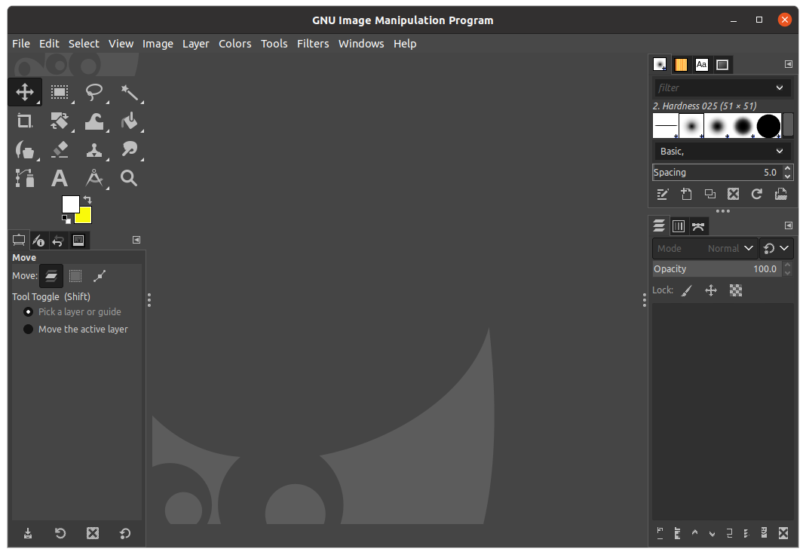
Opening and saving files
Working with files in GIMP is much like working with files in most software packages. However, there are a few important nuances to be aware of. The native file format for GIMP has the extension, xcf. GIMP (xcf) files are very useful when you are working in GIMP. They can store multiple image layers and editable text, which is useful for complicated graphics that you may need to periodically edit. However, xcf files are not useful when you want to embed your graphics in a document or website. For that, GIMP allows you to export to common graphics formats such png, tiff, jpg, and pdf. This tutorial will engage with xcf, png, and tiff formats and explain how to move between them.
Digital images: rasters and pixels
Before getting started, it's essential to introduce some basic concepts in digital imagery. A digital image such as the photographs you take with your phone or the graphics you produce on a computer are stored as a digital object called a raster. Rasters are two-dimensional grids comprized of cells called pixels (px). A typical digital photograph might consist of tens of thousands of pixels. Consider the following raster image of a projectile point. Zooming into the highlighted area near the upper right of the artifact, you can see the pixels that comprise the image:
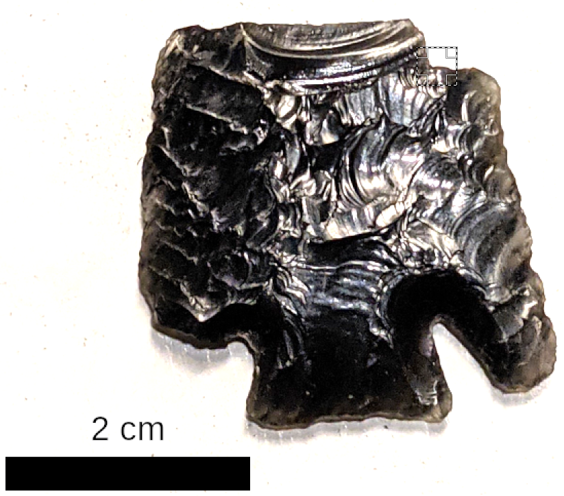
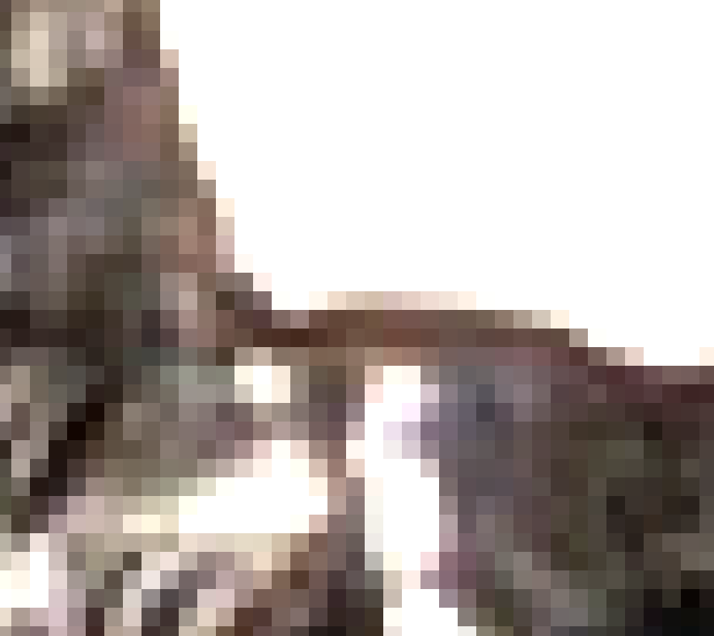
Digital image width and height is often expressed in pixels. For example, a typical digital image might have a width of 4160 px and a height of 3120 px. Such raster objects are commonly stored in jpg, tiff, and png file formats.
Pixel dimensions do not express a physical size. In other words, a pixel is not equal to a millimeter, centimeter, or any other physical length. In order to translate pixels–and thus image size–to a physical size for proper display on a computer screen or to print on paper, a resolution must be specified. Image resolution is expressed as the number of pixels per some unit of measure, often inches or centimeters. A commonly used resolution for printing is 300 pixels per inch (PPI), sometimes called dots per inch (DPI). This is because 300 PPI optimizes the tradeoff between image quality and file size. The human eye human eye cannot detect differences in resolutions above 300 PPI, and images below 300 DPI tend to look "pixellated," or grainy. Thus, images greater than 300 DPI entail file sizes that unecessarily tax computer resources, slowing down computer speed and potentially causing crashes. For this reason, most academic pubishers require that authors submit their graphics at 300 PPI.
An image's pixel size and user-specified resolution affect the physical size at which an image is printed. Suppose we wish to print an image that is 4160 px wide at 300 DPI. That printed image would print at 13.9 inches wide (4160 px X 1 in. / 300 px = 13.9 in.). If we decided to display the same image at a higher resolution of, say, 600 DPI, the final product would print at 6.9 in. wide (4160 px X 1 in. / 600 px = 6.9 in.). So you can see that specifying the resolution of a digital image affects the size of the image when it is displayed in print (or on the computer screen).
Now suppose that a publisher requires full page images to print at 6 in. wideat 300 PPI. To make that happen for our sample image, we first tell the image editing software that the image is 6 in. wide and that the resolution must be 300 PPI, at which point the software will decrease the pixel width from 4160 px to 1800 pixels (6 in. * 300 px / 1 in. = 1800 px). If math is not your thing, don't despair–GIMP will handle most calculations for you.
Now on with the tutorial. This tutorial covers the basics of cropping, sizing, adjusting color, adding text, and creating a scale bar for artifact images. The tutorial will conclude with an exercise in which you will edit several graphics and embed them in digital manuscript.
Cropping
Often, the image that you wish to include in a manuscript requires cropping to remove irrelevant portions from the scene. It's good practice to constrain your graphics to the relevant information not only for the sake of clarity but also for the sake of minimizing file sizes, which again, will maximize computer performance and reduce chances of experiencing crashes. Cropping is easy with the GIMP cropping tool.
- Open GIMP.
- In the File menu bar, click file and Open. A pop-up window will appear.
- Navigate to the file called site.jpg located in the tutorial file folder, and click Open. It will look like this:
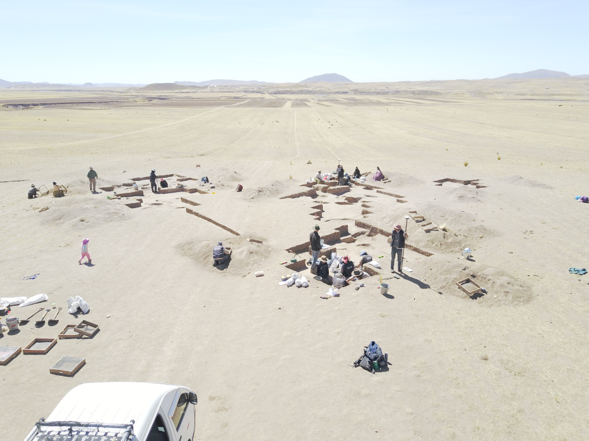
Suppose you would like to highlight the excavation area and landscape with this picture. You therefore want to remove the truck and backpack in the foreground. You also want to get rid of some empty space on the right side of the image and sky at the top. We can do this using the crop tool.
- Select the crop tool from the tool menu. The crop tool looks like 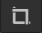 and is with other tools in a panel located near the top left of the GIMP screen.
- Left-click-and-drag across the portion of the image your would like to keep. When you release the mouse click, you will see a rectangle that defines your crop area.
- If you move your cursor around the crop box, you will see handles variously appear and highlight. Left click and drag on those to refine the placement of your crop box as needed.
- Once you are happy with the crop box, hit enter. Your image should now be cropped.
- Export the cropped image to your tutorial folder, calling it Fig1.png. Do not "save" the image as a GIMP file. We want to export the graphic. A pop-up window will appear. Just accept the default values and click Export.
Sizing
Appropriate sizing of graphics can help you produce high-quality documents with small file sizes, and can help you avoid trouble with publishers. Here, you will learn how to appropriately size a document for placement in a manuscript. Suppose you wish to submit the cropped image from the previous section for publication. You would like this image to cover the width of the article text area, which the publisher specifies as 6 in. They further require that image resolution is 300 PPI. Here, we size the image to optimize for quality and size and meet the publisher's requirements.
- Inspect the image size by clicking Image, Image Properties in the File menu bar. An Image Properties pop-up window will appear. You will see that the image consists of around 7 million pixels–about 3500 X 2000 px. The resolution is 72 PPI, all of which translates to an image that is 55.56 X 41.67 in. Neither the size nor resolution are appropriate for the publishers request.
- Also, take note of the file size in memory, which is aroud 115 MB. This is rather large. We'll soon see how resizing can affect file size. Close the Image Properties pop-up window.
- To change the image size, select Image, Scale Image from the File menu bar. A pop-up window will appear displaying the image size and resolution.
- Change the size units to in. Notice that the image size changes to reflect the size in inches.
- Change the x resolution to 300 PPI (pixels/in). The y resolution should also change automatically. If not, undo your change to the x resolution, click the chain-link icon for the resolution values (this ensures that the x and y values cannot be changed independently), and retry changing the x resolution to 300 PPI. Both the x and y resolution values should be 300 PPI.
- Change the image width to 6 inches. The height should adjust automatically to some number less than 6 inches. If not, undo your change to the width, click the chain-link icon for the width values (this ensures that the width and height values cannot be changed independently), and retry changing the width to 6 inches.
- Click Scale. Your image is now perfectly scaled. It will look smaller on the screen. But you can just zoom in using the magnifying tool or
Shift +. You'll see that the image is still high resolution and clear.
- Re-inspect the image size by clicking Image, Image Properties in the File menu bar. You should now see that the file size in memory dropped to around 93 MB from the previous 115 MB.
- Finally, export your file with the name, Fig1.png, replacing your previous Fig1 file. A pop-up window will appear. Just accept the default values and click Export.
Adjusting color
GIMP has a number of color adjustment tools, mostly located in the Colors menu of the File menu bar. Feel free to explore them. I will focus on one tool that I find most useful for color adjustment–the levels adjustment tool. You observe that the Fig1.png image is a bit washed out. You'd like to adjust the color.
- Open your Fig1.png file in GIMP if not already open.
- Selet Colors, Levels from the File menu bar. A pop up window will appear that looks as follows:
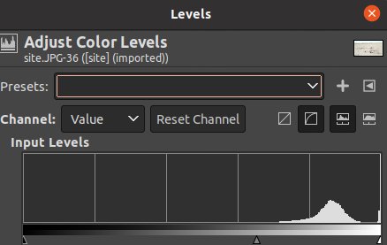
Inspect the window. Notice the histogram. This shows the distribution of color lightness values in your image. Notice too the three small triangles along the bottom edge of the histogram frame. Those are handles that allow you to adjust the brightness balance of your image. A well balanced image typically exhbits a smooth curve that is centered (though this is not always the case).
- Left-click-and-drag the handles to see how they affect the color balance. Don't worry about messing it up. You can always hit the Reset button if you want to return to the original values.
- When you are happy with the color balance, click OK.
- Finally, export your file with the name, Fig1.png, replacing your previous Fig1 file.
- Close your artifact image file. You will be asked to save it. Say no, and close the window. Don't worry–your edits were saved in your exported the png file.
Adding a scale bar and using image layers
Archaeological publication often requires scaled images of artifacts. It's often useful to display the artifact at its actual size. Other times, we may wish to zoom in or out. Here, we'll edit an artifact photograph so that it is properly scaled to its actual size, and we'll add a simple scale bar. In the process, you'll learn how to work with super-imposed image layers in GIMP. Note, that order of operations is important when precisley scaling images to their actual size.
- In the File menu bar, click file and Open. A pop-up window will appear.
- Navigate to the file called artifact.jpg located in the tutorial file folder, and click Open. It will look like this:
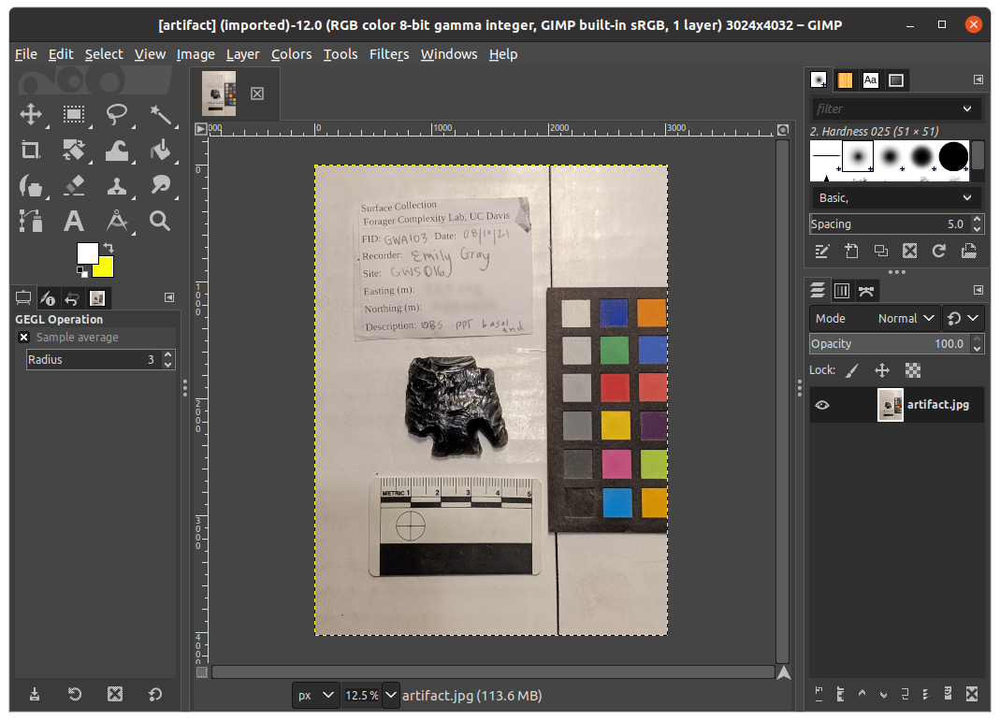
Although a reasonable image for publication, it is incorrectly sized and contains a lot of unecessarily distracting information. Our edited version will look like this:
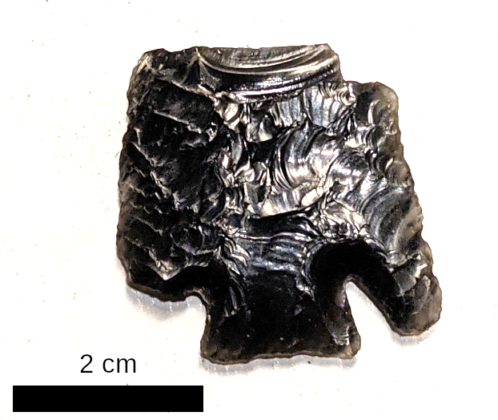
Let's see how to get from the original image to the cleaned version.
- Suppose we wish to display the artifact at it's actual size in a printed report. To scale the image appropriately, use the measure tool, , to measure the scale bar in the image. If you measure from 0 to 1 cm on the scale bar, you'll see that GIMP believes the distance to be 2.168 cm. But we know that's incorrect because it's actually 1.000 cm. That means we need to scale the image by 46.1% (1 / 2.168 X 100 = 46.1%). Here's what the measure tool looks like in action:
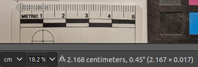
- In the File menu bar, click Scale Image. A pop-up window will appear.
- Change the Image Size units to percent (%), and change the Width and Height to 46.1%, and click Scale.
- Now re-measure the 1 cm distance with your measure tool. You should now get the correct distance. Incidentally, once you scale your image like this, you can derive artifact measurements in this way, which can be useful for various metric analyses. However, some caution is warranted because camera angles and fish-eye effects can introduce error. For this reason, imaging artifacts with a flatbed scanner can be useful (to be discussed in a future tutorial).
Now we can create a cleaner scale bar–just a simple black rectangle 2 cm long as shown above.
- First, let's create a new image layer for the scale bar. Find the layers panel, which is usually located on the lower right of the GIMP screen and looks like this:
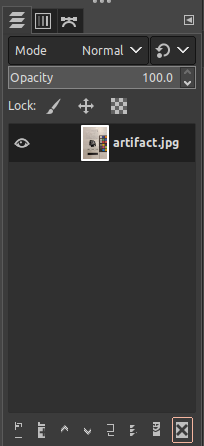
- In the lower left corner of that layer pane, click the create new layer icon, 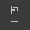. A pop-up window will appear.
- Change the layer name to "scale bar". Make sure the "Fill with" field is set to Transparency. This creates a transparent layer to which we will add color.
- Click OK. You now have a transparent layer to which we can add a scale bar.
- Zoom in to the scale bar shown in the photograph so that you will be able to more easily work with it. You can either use the
Shift + shortcut to zoom in (use the - button to zoom out), or use the magnifying tool, (), located in the tool window.
- To create a simple rectangulr scale bar, first select the rectangle select tool, which looks like 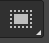, from the tool window. The rectanle tool allows you to select rectangular areas in your image.
- Left-click-and-hold at the top of the one-centimeter tick mark, and drag your cursor to the midpoint of the 3 centimeter tick mark. You should see a rectangle selection area that look something like this:
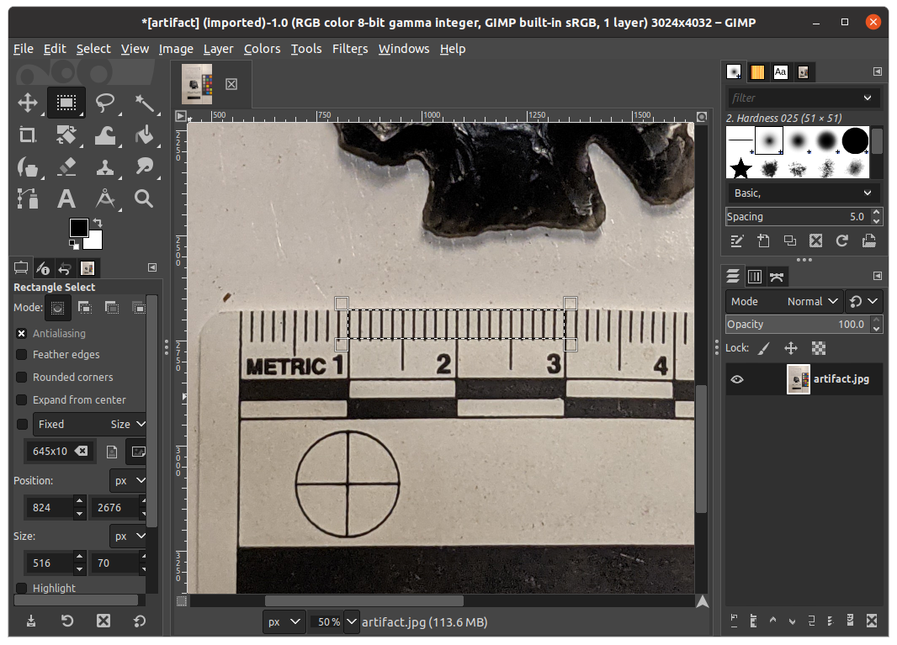
- Select the paint bucket tool, , from the tool panel.
- Set the paint bucket color to black by making sure the Foreground square (top left) of the foreground color icon, 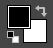, is black. If its not, click the two small squares on the lower left of the icon.
- Inside the selected rectangle area, left click to "dump" your paintbucket. You will see the space filled with the color black. This is your scale bar.
- Remove your selection by clicking Select, None from the File menu bar.
- Now let's move the scale bar to a different location. Select the move icon, , from the tools panel.
- Left-click-and-drag the scale bar to your preferred location.
- Zoom back out (minus) to see the whole image. You should see a yellow rectangle, which is the frame for the scale bar layer. It's distracting, so we'll shrink the frame to the scale bar.
- In the File menu bar, click Layer, Crop to Content. The yellow frame will shrink to the scale bar. This yellow frame will not actually print or appear in your final image. It's just a guide to show you your layer extent.
- In the layers panel, click the artifact.jpg layer. You can see how the frame shifts to reflect that layer's extent.
- Now that you have layers, you should save them in case you want to edit them later. Standard raster file formats, including jpg, tiff, and png, don't typically allow you to save layers. So save your file as a GIMP file called artifact.xcf.
Adding text
It's common to add text to archaeological graphics, and GIMP offers some tools for text editing. Here, we'll use text to specify the length of our scale bar.
- Select the text tool,
 , from your tools panel. You should see a text options panel appear in the lower left of the GIMP screen that looks like this:
, from your tools panel. You should see a text options panel appear in the lower left of the GIMP screen that looks like this:
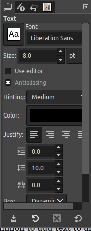
- Set the Font to Liberation Sans and the Size to 8.0 pt. Publication graphics often require sans-serif fonts and 6–10 pt font.
- Left click somewhere around the scale bar to place your text. I prefer to center the scale text above the scale bar.
- Enter, "2 cm", and hit your Esc key to exit the text box. You will now see your scale bar text.
Now that you've scaled your artifact image and have a scale bar, let's do some final cleanup to prepare the image for publication.
- Use the move tool, , to more precisely place your scale text. Note that it can be a bit tricky to select and move text. Be sure to place your cursor precisely on the text to drag it. If you accidentally move the wrong layer, use the Undo command to restore the layer placement and try again. It can also help to zoom into the text before trying to move it.
- Use the crop tool to crop your image so that only the artifact and scale bar are showing.
- Use the levels adjuster to adjust the color balance of the artifact. Make sure that the artifact.jpg layer is selected in the layers panel.
- Save your xcf file.
You've now created a properly scale artifact graphic with a scale bar.
- Export the image as a file called Fig2.jpg
Exercise
Suppose you are preparing a short report for a goverment agency. You have three figures to display. You've already produced Figures 1 and 2 in this tutorial. Now you'll create Figure 3 and compile Figures 1–3 in a single document.
- Using your phone or other digital camera, take a portrait-oriented (i.e., vertical) photograph of some object, person, animal, activity, or landscape of interest.
- Use your favorite method to download the image to your computer (e.g., email it to yourself), and open the file in GIMP.
- Set your image width to 3" and resolution to 300 PPI.
Why 3"? Imagine you wish the image to appear in a single column on the right side of a page in your report. If your publisher specifies that a 6" image covers the full page, then a 3" image should be appropriate for a single column in a two-column layout.
- Export your image as a file called Fig3.jpg.
- Put your three figures with captions into a word processing document with Figure 1 on page 1, and Figures 2 and 3 together on page 2. Use a page break to separate the two pages. Just make up one-sentance captions for each figure. See the Word Procssing tutorial for guidance on how to embed figures with captions.
- Export the product as a pdf file.